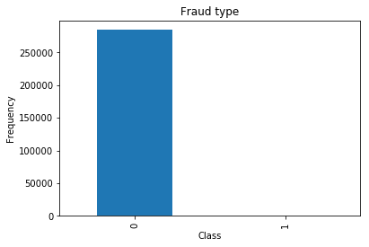

About the Dataset
We found that the dataset we chose was extremely unbalanced, with a staggering 99.8% of the entire dataset being classified as non-fraudulent, and the fraudulent cases are so insignificant that it can’t be seen on the chart above!
Legend
0 - non-fraudulent cases
1 - fraudulent cases